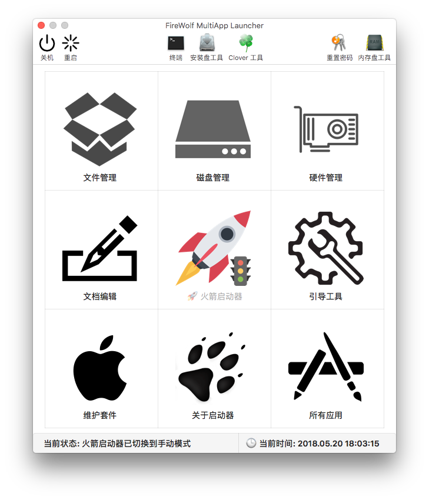

火箭启动器简介与使用
由于 macOS 恢复系统的限制，在 PE 下是无法通过双击来打开文件或者程序的。
若想打开一个文件，你需要先在启动器里启动相应程序。比如说属性表文件可以用 PlistEdit Pro 来打开。
而后使用该应用的『文件』菜单，选择『打开』在对话框中选择该文件。
但是这个方法仍然需要几步操作，还是比较麻烦的。于是乎...
现在我们提供了一个新的解决方案：FireWolf MultiApp Launcher 内置了一个迷你的文件启动器，命名为火箭启动器。
火箭启动器支持两种运行模式：自动模式和手动模式。切换模式的方法也很简单，双击主界面的『火箭』图标即可。

如上图所示，『火箭』图标的右下方出现了『交通信号灯』，则说明启动器处在手动模式下，反之亦然。
你可以直接拖动想打开的文件到主界面的『火箭』图标上。
在自动模式下，火箭启动器会自动查找对应的应用程序，而后尝试用它打开你拖入的文件。
如果火箭启动器无法找到对应的应用程序，会弹出一个窗口允许你手动选择一个程序来打开拖入的文件。
而在手动模式下，火箭启动器允许你为每一个拖入的文件选择对应的应用程序。
请注意：火箭启动器仍然处于实验性阶段，并不能 100% 保证所有拖入的文件都可以正常打开。
并且现阶段不支持打开文件夹以及应用程序。如果火箭启动器无法正常打开拖入的文件，请使用本小节开头讲述的办法。